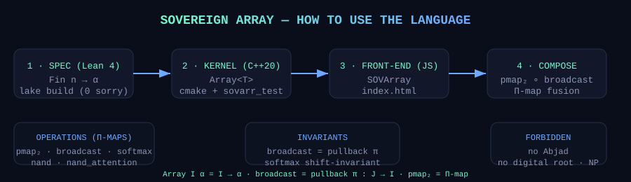

Playground
pmap₂ — pointwise Π-map
…
broadcast — pullback π : J → I
…
softmax — Π-map normalization
…
NAND — universal gate
…
attention — NAND-extracted spec
…
Usage Guide

How to use the language
- Spec (Lean 4) — define arrays as dependent functions
Fin n → α; provebroadcast_is_pullbackandsoftmax_is_pmapwithlake build(zero sorry). - Kernel (C++20) —
#include "sovereign_array.h"; build with CMake; runsovarr_test(11/11 checks). - Front-end (this page) — open
index.html; the playground runs the same denotational semantics in the browser. - Compose — chain
pmap₂/broadcast/softmax/nand_attention; fusion is Π-map fusion — no loop in the denotation.